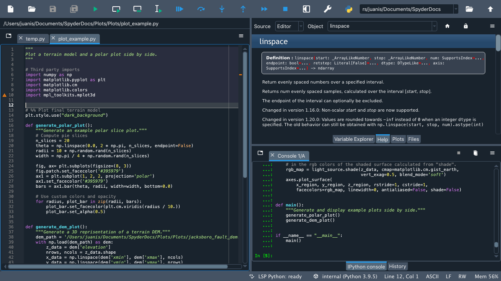
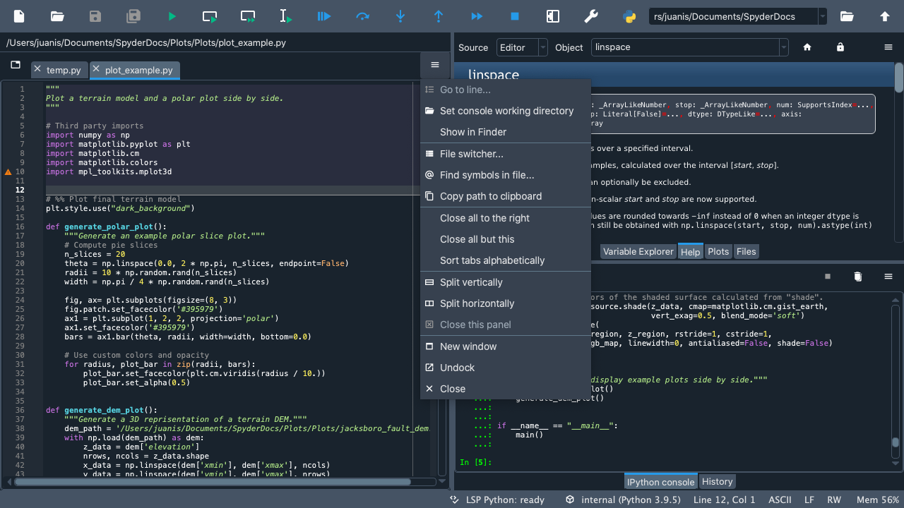
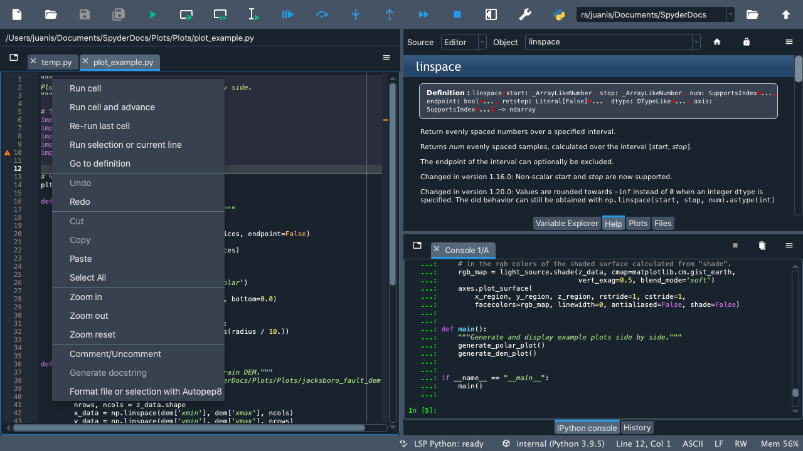
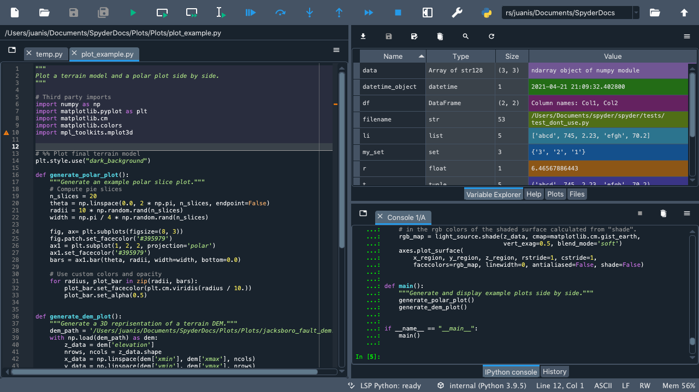
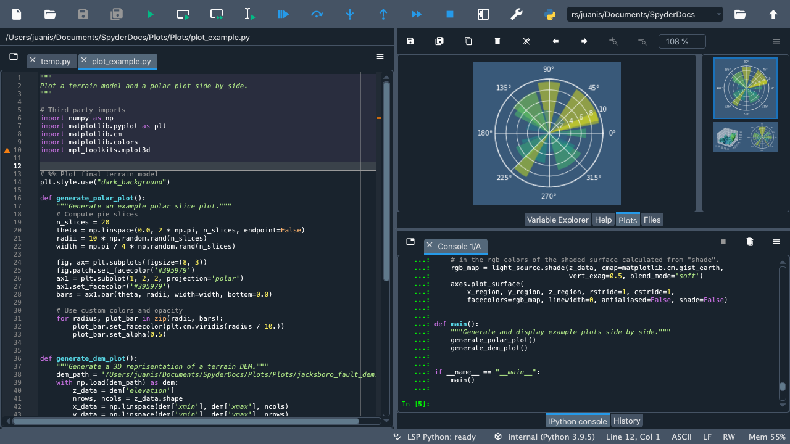
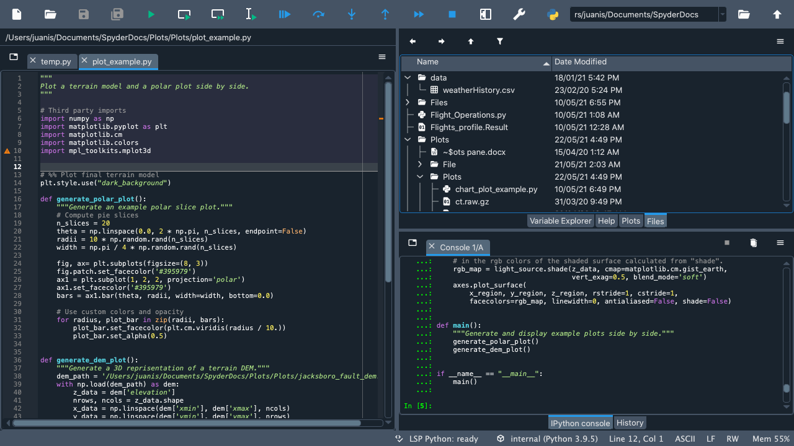
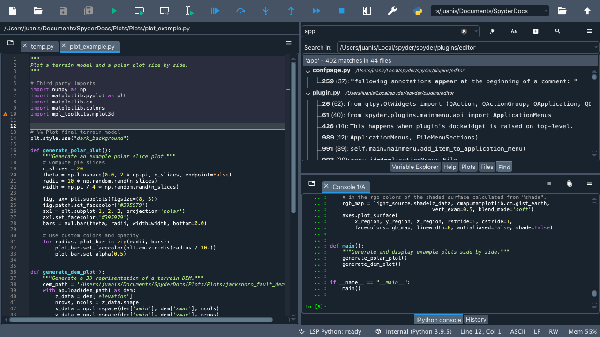
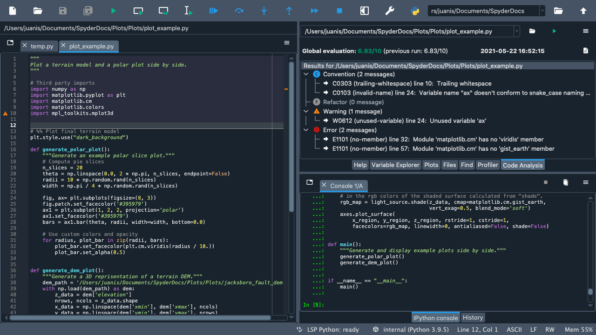
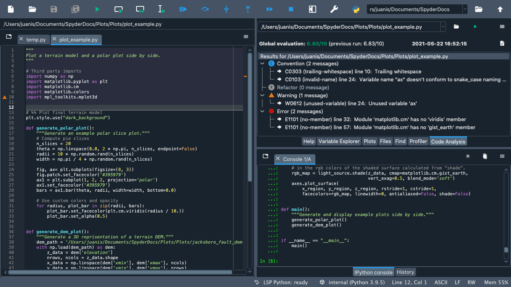
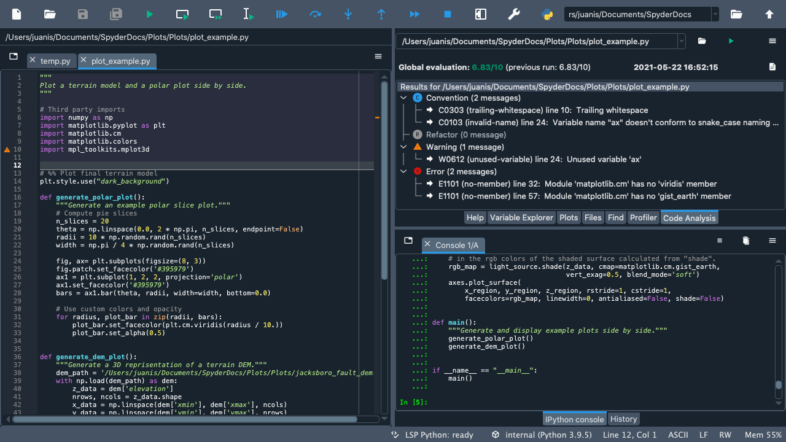

Tour#
Welcome to our Quickstart! Here you will find an interactive tour that will guide you through Spyder’s interface. You’ll get familiar with the most important parts of the IDE, especially those we’ll be mentioning throughout our docs. Finally, you’ll get to walk through some of Spyder’s key panes and functionality.







 

